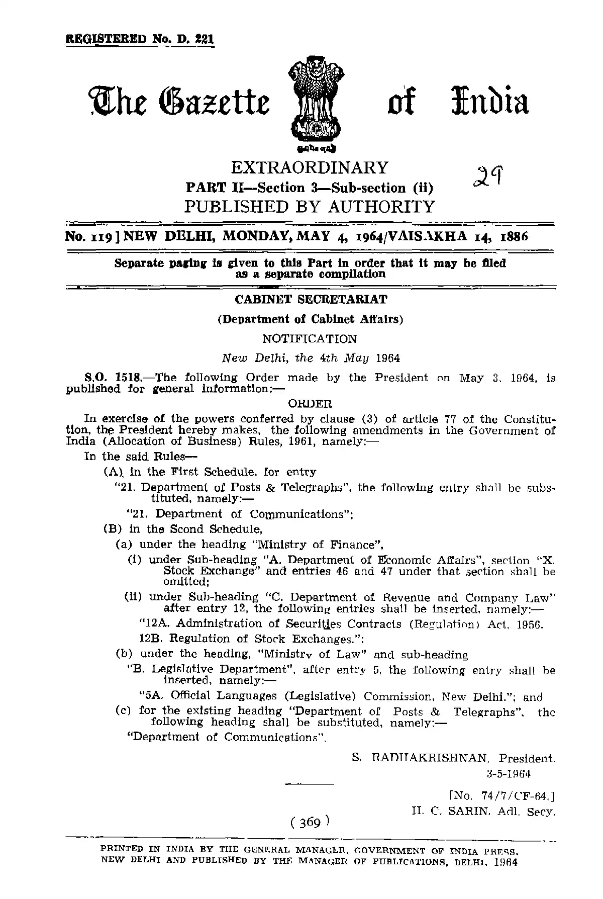

Amendment #29 (S.O. 1518, 1964)
5 changes: 1 to the First Schedule, 4 to the Second Schedule. 5 applied
What it did to the ministries
- renamedDepartment of Posts and Telegraphs is renamed Department of Communications change 1, 5 · histories: Communications
The order, page by page
Page 1 of 2

12345Schedule 1 › entry 21
- 21. Department of Communications
applied at schedule 1 › department 21 in the Rules after #29
Schedule 2 › Ministry of Finance › Department of Economic Affairs › X. Stock Exchange; Schedule 2 › Ministry of Finance › Department of Economic Affairs › X. Stock Exchange › entry 46; Schedule 2 › Ministry of Finance › Department of Economic Affairs › X. Stock Exchange › entry 47
applied at schedule 2 › ministry MINISTRY OF FINANCE › department A › group_heading X in the Rules after #29
after Schedule 2 › Ministry of Finance › Department of Revenue and Company Law › entry 12
- 12A. Administration of Securities Contracts (Regulation) Act, 1956.
- 12B. Regulation of Stock Exchanges.
applied at schedule 2 › ministry MINISTRY OF FINANCE › department C › entry 12A in the Rules after #29
after Schedule 2 › Ministry of Law › Legislative Department › entry 5
- 5A. Official Languages (Legislative) Commission, New Delhi.
applied at schedule 2 › ministry MINISTRY OF LAW. › department B › entry 5A in the Rules after #29
Schedule 2 › Department of Posts & Telegraphs
- Department of Communications
applied at schedule 2 › department Department of Communications in the Rules after #29
Page 2 of 2
How this document was read
From the Government of India (Allocation of Business) Rules, 1961 and their amendments, as published by the Cabinet Secretariat (cabsec.gov.in), read by orgpedia. The readings of the older scanned gazettes have known gaps.